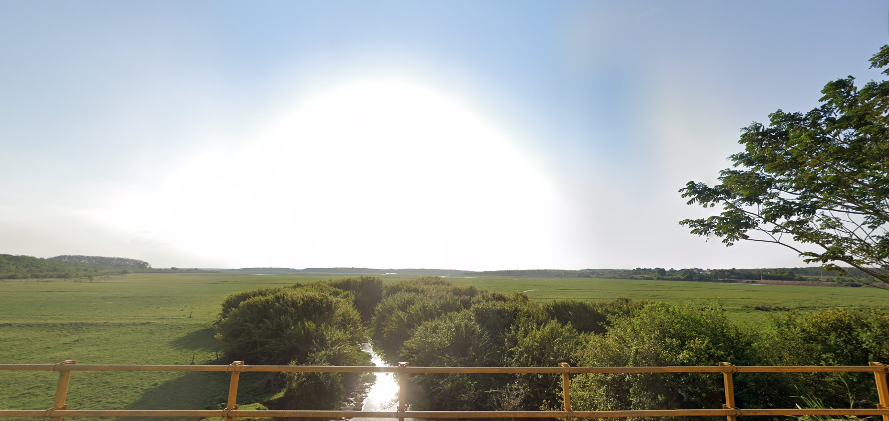
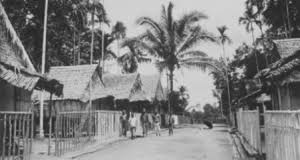
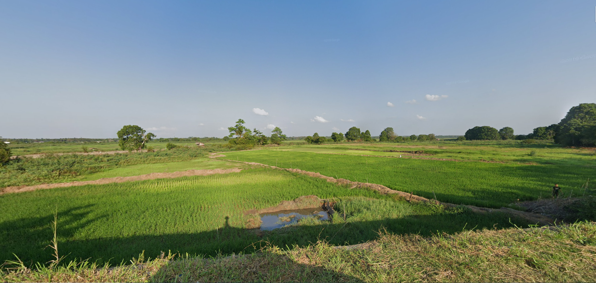
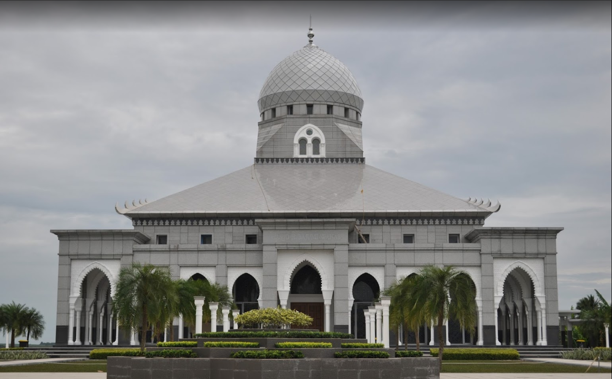
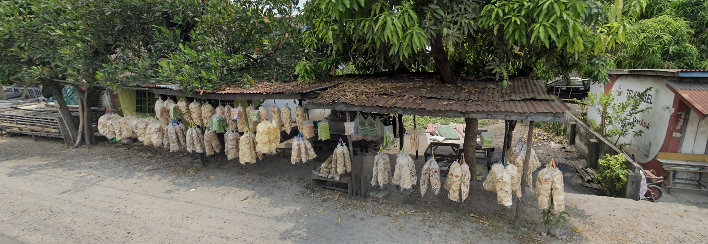
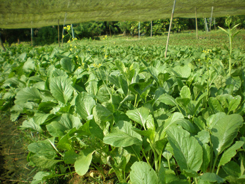
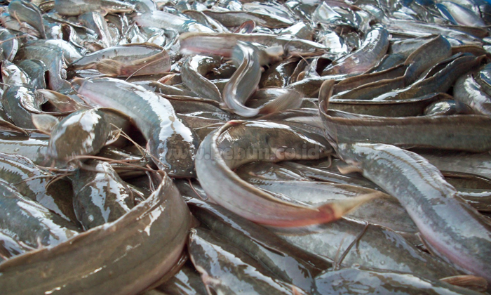

Selayang Pandang

Beti adalah desa yang berada di kecamatan Indralaya Selatan, Kabupaten Ogan Ilir, Sumatra Selatan, Indonesia.
Sebagian besar penduduk Beti bekerja sebagai pedagang kecil yang berjualan dari satu pasar ke pasar yang lain. Selain itu sebagian masyarakatnya juga bertani dan berkebun. Sebagian yang lain juga bekerja sebagai guru, pegawai negeri sipil, dan pegawai swasta.
Sejarah

Asal mula berdirinya Desa Beti dari puyang/nenek moyang seorang wanita yang bernama Juai yang datang dari Daerah Banten. Selain itu juga yang mendiami Desa Beti ini yaitu Usang Darat Balai yang mempunyai dua orang istri, istri yang pertama mempunyai dua orang anak, satu anak laki-laki dan satunya anak perempuan, tetapi anak perempuannya terlebih dahulu meninggal dunia sedangkan istri yang kedua tidak mempunyai anak dari hasil perkawinannya.
Karena letak Desa Beti ini cukup strategis, lama kelamaan semakin banyak orang yang datang dari Daerah lainnya untuk tinggal di Desa ini, sehingga terbentuklah sebuah perkampungan atau pedesaan, maka dari itu penduduk yang menghuni Desa tersebut mengadakan musyawarah untuk memberi nama Desa ini.
Dari hasil musyawarah itulah di dapat sebuah nama “ Beti “ yang bersal dari kata “Betina” karena nenek moyang yang pertama kali tinggal atau datang ke Desa Beti ini adalah seoarang Betina/wanita dan nama Beti inilah yang di pakai sekarang sebagai nama Desa yaitu Desa Beti (Wawancara dengan Tokoh Agama Bapak Moli, 12 Juni 2010).
Geografis

Letak Wilayah Desa Beti ini cukup strategis karena berjarak cukup dekat dengan pusat kota yang berjarak lebih kurang 7 km Ibu Kota Kabupaten dan 43 km dari Kota Madya Palembang (Wawancara dengan Bapak Asmawi, 12 Juni 2010).
Wilayah Desa Beti di sebelah timur berbatasan dengan Desa Meranjat III. Di sebelah barat berbatasan dengan Desa Meranjat Ilir. Sebelah Utara berbatasan dengan Desa Tanjung Lubuk. Dan di selatan berbatasan dengan Desa Tanjung Dayang.
Desa Beti mempunyai Wilayah Desa yang cukup luas yaitu 673 Ha, yang dimanfaatkan oleh penduduk untuk pemukiman, perkantoran, perkebunan, persawahan, dan lain-lainnya.
Wisata
Di desa ini kita bisa membagi wisata ke dalam beberapa kategori yakni
Wisata Religi dan Budaya

Seluruh warga desa ini beragama Islam. Oleh karena itu Desa Beti dalam kehidupan rekigi dan kebudayaan sangat erat sekali dengan nilai-nilai ke-Islam-an.
Bila anda datang di waktu yang tepat, anda akan melihat kegiatan adat dan budaya yang mencerminkan kehidupan beragama di desa ini.
Wisata Kuliner

Ada berbagai macam kuliner khas di daerah ini, salah satunya "Empap". Sebuah olahan makanan yang berasal dari ikan. Selanjutnya ada "Pekasam" dan "Sambal Asam Kumbang". Daripada penasaran, yuk coba datang ke desa ini.
Potensi Desa
Potensi yang ada di desa ini antara lain sebagai berikut:
Ekonomi
Pada umumnya mata pencaharian pokok masyarakat Desa Beti adalah petani yang di kelola masyarakat Desa Beti adalah menanam padi yang dilakukan setahun sekali, selain jadi petani ada juga yang menjadi buruh tani, pedagang, PNS, nelayan, sopir dan lainnya.
Sosial Keagamaan
Potensi sosial keagamaan yang sangat menarik untuk sebagai bentuk dari sebuah peradaban.
Pertanian dan Perkebunan

Ini juga menjadi potensi yang sangat menarik untuk dikembangkan, mengingat sebagian warga juga memiliki lahan untuk pertanian dan perkebunan. Juga tanah desa yang sangat besar manfaatnya untuk diolah sebagai pertanian dan perkebunan rakyat.
Perikanan dan Peternakan

Sangat berpotensi juga untu mengembangkan sektor ini. Secara geografis, desa ini sebaguan wilayahnya adalah rawa, dan dilintasi oleh anak sungai Ogan yang merupakan salah satu dari sembilan sungai besar yang ada di Sumatera Selatan.